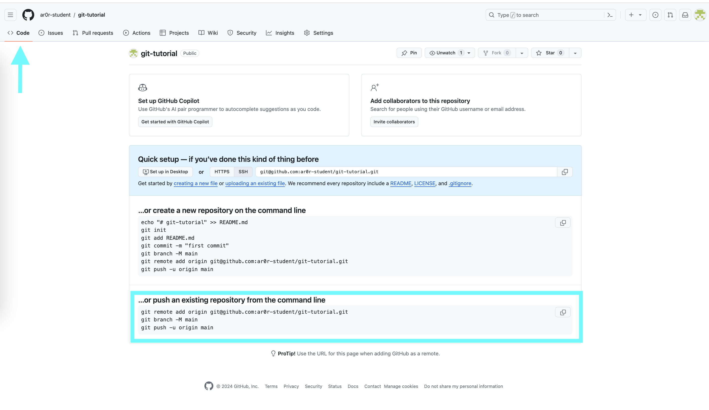

Git Tutorial - Working with Remote Repositories
Note
This section assumes you have:
completed the Git Tutorial - Working Locally and Git Tutorial - Preparing to use GitHub sections of the tutorial and
opened a terminal window that is connected to one of the CS Linux servers.
In the Git Tutorial - Working Locally section, we covered how to convert an existing directory into a repository and how to create commits. In this part, you will learn how to link up your repository with GitHub.
Creating a Repository on GitHub
To link our local repository to a repository on GitHub, we need to first create an empty repository on GitHub. To do this, log into GitHub, and click on the “+” icon on the top-right of the page, and then on “New Repository”:

Then, under “Repository name” enter git-tutorial. Do not
change any other setting, and click on the green “Create repository”
button.
{kind=link}
Note that you will see your GitHub username rather than
ar0r-student underneath Owner.
Once you complete this step, you will be taken to a page where you can browse your repository through GitHub’s web interface. To start, this page will include instructions for setting up a new repository and for connecting an existing repository (our case).
{kind=link}
Since we want to link an existing local repository to this new remote repository on GitHub, we fall into the second case.
In your terminal window, verify that you are in your git-tutorial
directory using pwd and if, not navigate to it.
The first step is to set the URL (that is, the Uniform Resource Locator) for the remote repository. To do so, copy and run the first line in the “..or push an existing repository from the command line” section of the setup page. The command will have the form:
$ git remote add origin URL
where URL is the URL for your repository. Copy-and-paste the line from your browser instead of retyping it to reduce the likelihood that you make a mistake when entering it. This command does not generate any output.
The URL should start with git@github.com:. If the URL starts with
http:// instead, please ask for help.
You can verify that you did this step correctly by running:
$ git config --get remote.origin.url
It should show the actual URL for your repository:
git@github.com:GITHUB_USERNAME/git-tutorial.git
where GITHUB_USERNAME is your actual GitHub username. If the
result of this command does not look right, please ask for help.
We have already set the branch name for git-tutorial, so we
can skip the next step in the instructions.
Next, you need to push your local commits to the repository on GitHub using git push:
$ git push -u origin main
Enumerating objects: 14, done.
Counting objects: 100% (14/14), done.
Delta compression using up to 16 threads
Compressing objects: 100% (14/14), done.
Writing objects: 100% (14/14), 1.22 KiB | 1.22 MiB/s, done.
Total 14 (delta 2), reused 0 (delta 0)
remote: Resolving deltas: 100% (2/2), done.
To github.com:GITHUB_USERNAME/git-tutorial.git
* [new branch] main -> main
Branch 'main' set up to track remote branch 'main' from 'origin'.
You may be asked some variant of the following question:
Warning: the ECDSA host key for 'github.com' differs from the key for the IP address '140.82.114.3'
Offending key for IP in /home/CNETID/.ssh/known_hosts:1
Matching host key in /home/CNETID/.ssh/known_hosts:10
Are you sure you want to continue connecting (yes/no)?
If so, respond yes. Unfortunately, you may get asked this
question the next few times you use a command to interact with GitHub.
It is safe to say yes.
If you run git status in your terminal window after you have
completed the push, you will see something like:
$ git status
On branch main
Your branch is up to date with 'origin/main'.
nothing to commit, working tree clean
which tells you that the local and remote copies of your repository are in sync.
If you switch back to your browser and click on Code, you should
see something like this:
{kind=link}
If you click on the names of the files, you will see that the contents of the files on GitHub is the same as the files in the copy of your repository on the CS Linux servers.
If you click on commits, you will be taken to a page that shows
the commit log in reverse chronological order (that is, the most
recent commit is shown first).
{kind=link}
If you click on a specific commit, GitHub will show you the
exact changes that were made. For example, clicking on
the commit with the message "Forgot to capitalize in Spanish version"
yields:
{kind=link}
Lines starting with a - (shown with a red background) were
removed. Lines starting with a + (shown with a green background)
were added.
Making Changes and Re-Synchronizing
You now have two copies of your repository: one on the CS Linux servers and one on GitHub. Anyone who has permission to access your GitHub repository will be able to see the repository as it exists on GitHub. They will not be able to see changes that you have made locally until you push them.
We’ll explore this behavior in this section. Create a new
file hej.py with the following contents:
print("Hej")
print("Hej Verden")
print("Hej Univers")
print("Hej Multivers")
and then create a commit for this file:
$ git add hej.py
$ git commit -m"Added Danish version"
If you run git status, you will see a message that tells you that
your local copy of the repository is “ahead” of the remote copy on
GitHub by one commit:
$ git status .
On branch main
Your branch is ahead of 'origin/main' by 1 commit.
(use "git push" to publish your local commits)
If you switch to your browser and click on Code to get back to the
code page, you will see that the repository on GitHub does not include
hej.py. To bring GitHub up to date, you need to push your work by
running:
$ git push
The output will be something like:
Enumerating objects: 4, done.
Counting objects: 100% (4/4), done.
Delta compression using up to 16 threads
Compressing objects: 100% (3/3), done.
Writing objects: 100% (3/3), 378 bytes | 378.00 KiB/s, done.
Total 3 (delta 0), reused 0 (delta 0)
To github.com:GITHUB_USERNAME/git-tutorial.git
Now if you run git status it will show you that the two
versions are in sync:
$ git status
On branch main
Your branch is up to date with 'origin/main'.
nothing to commit, working tree clean
If you refresh the browser page that is open to your
git-tutorial repository on GitHub, you should now see
hej.py.
{kind=link}
In general, synchronizing (aka, syncing) your local and remote repositories is a three step process:
add/stage the new/changed files,
create a commit, and then
push the new commit to the server.
When you are first working with git, it is good practice to end every work session by syncing your local and remote repositories. Similarly, before you ask a question about your code in a class, you should sync your repository with GitHub to ensure that the course staff can see the most recent version of your code.
The more disciplined you are about frequently syncing your repository and verifying that your repository is in a clean state, the less likely it is that you will run into a difficult-to-fix Git problem.
Exercise: Syncing a change with a remote repository
Create a file named README.md that contains Git Tutorial
and your name. Add this file to your local repository, create a
commit, and sync it with GitHub.
When you are finished, git status should show that your working
tree is clean and up to date with origin/main and README.md
should appear when you refresh the browser page that is open to your
git-tutorial repository on GitHub.
{kind=link}
If you need to take a break, this would be a good time to stop.
Summary
In this section, you learned how to connect a local repository to a remote server, and learned how to push local changes to that server. The next section explains how to view the commit log.